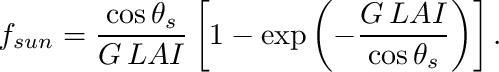
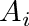
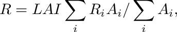
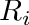
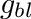
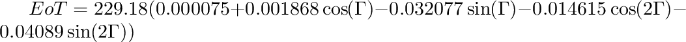

|
.
v1.1.1
|
|
.
v1.1.1
|

Dependencies
NVIDIA CUDA 9.0+
gcc/g++ 5.5+
CMakeLists.txt
set( PLUGINS "energybalancemodel" )
Header File
#include "EnergyBalanceModel.h"
Class
None.
This model plugin calculates a local energy balance for every primitive, and ultimately predics sensible, latent, and longwave fluxes as well as surface temperature. The energy balance equation is solved in parallel on the GPU to accelerate calculations.
The model is solving the steady-state budget between absorbed radiation, emitted radiation, sensible heat exchange, and latent heat exchange, which is written as

Variables in this equation are listed in this table:
Variable (units)
Description
 (W/m2)
(W/m2)
Absorbed all-wave radiation flux (shortwave+longwave).
 (K)
Primitive surface temperature.
 (mol air/m2-s)
(mol air/m2-s)
Conductance to heat from primitive surface to outside of boundary-layer.
 (K)
(K)
Air temperature just outside primitive boundary-layer.
 (mol air/m2-s)
(mol air/m2-s)
Conductance to moisture from primitive surface to outside of boundary-layer.
 (Pa)
Saturation vapor pressure at temperature T. Calculated from Tetens equation (see en.wikipedia.org/wiki/Tetens_equation)

Relative humidity of air at primitive surface.

Relative humidity of air outside of boundary-layer.
 (Pa)
(Pa)
Atmospheric pressure.
 (W/m2)
Any surface fluxes other than radiation, convection, or latent (e.g., storage).
Constants are given by:
Constant (units)
Value
Description
 (J/mol/K)
29.25
Heat capacity of air.
 (J/mol)
(J/mol)
44,000
Latent heat of vaporization of air.
Constructors
EnergyBalanceModel( helios::Context* context)
The EnergyBalanceModel class is initialized by simply passing a pointer to the Helios context as an argument to the constructor.
Primitive Data
Units
Data Type
Description
Available Plug-ins
Default Value
radiation_flux_[*]
W/m2
float
Net absorbed radiation flux for band *.
Can be computed by RadiationModel plug-in.
0
wind_speed
m/s
float
Air wind speed just outside of primitive boundary-layer.
N/A
1 m/s
object_length
m
float
Characteristic dimension of object formed by primitive.
N/A
Square root of primitive surface area
boundarylayer_conductance
mol air/m2-s
float
Leaf boundary-layer conductance to heat.
N/A
Try calculating from model 
air_temperature
Kelvin
float
Ambient air temperature outside of surface boundary layer.
N/A
300 K
moisture_conductance
mol air/m2-s
float
Leaf boundary-layer conductance to moisture.
Can be computed by StomatalConductanceModel plug-in.
0.1 mol/m2-s
surface_humidity
unitless
float
Relative humidity of air immediately above surface evaporating site.
N/A
1.0 (saturated)
air_humidity
unitless
float
Ambient air relative humidity outside of surface boundary layer.
N/A
0.5
air_pressure
Pascals
float
Atmospheric pressure.
N/A
101,000 Pa
other_surface_flux
W/m2
float
Other surface energy fluxes, e.g., storage flux.
N/A
0
Primitive Data
Units
Data Type
Description
temperature
Kelvin
float
Primitive surface temperature.
sensible_flux
W/m2
float
Sensible heat flux.
latent_flux
W/m2
float
Latent heat flux.
Primitive Data
Units
Data Type
Description
boundarylayer_conductance_out
mol air/m2-s
float
Primitive boundary-layer conductance calculated by this plug-in.
vapor_pressure_deficit
mol/mol
float
Surface vapor pressure deficit.
Inputs to the model are set by creating primitive variable data in the usual way. If a variable needed for a model input has not been create in the Context, the default value is assumed.
In order for the model to calculate the absorbed all-wave radiation flux, it needs to know the names of all radiation bands that were added to the radiation model. This is done using the function addRadiationBand(). In the following examplle, assume we have three radiative wavebands "PAR", "NIR", and "LW".
energybalance.addRadiationBand("PAR");
energybalance.addRadiationBand("NIR");
energybalance.addRadiationBand("LW");The boundary-layer conductance is calculated as
 ,
,
where  is the wind speed just outside of the primitive boundary-layer, and
is the wind speed just outside of the primitive boundary-layer, and  is the characteristic length/dimension of the object that the primitive belongs to. For a leaf consisting of a single primitive, could be assumed to be the length of the primitive. If the primitive was a triangle that forms the surface of a sphere, could be assumed to be the diameter of the sphere.
is the characteristic length/dimension of the object that the primitive belongs to. For a leaf consisting of a single primitive, could be assumed to be the length of the primitive. If the primitive was a triangle that forms the surface of a sphere, could be assumed to be the diameter of the sphere.
Users can override this model by directly providing a value for by setting the value of primitive data labeled ‘boundarylayer_conductance’.
The model is run using the EnergyBalanceModel::run() function, which will run the model for all primitives in the Context if no argument is give, or will run the model for a subset of primitives if a vector of UUIDs is given as the argument.
Model Run Function
Description
EnergyBalanceModel::run( void )
Run the model for all primitives in the Context.
EnergyBalanceModel::run( std::vector<uint> UUIDs )
Run the model for a select set of primitives in the Context, which are specified by a vector of their UUIDs.
#include "EnergyBalanceModel.h" int main(void){ EnergyBalanceModel energybalance(&context); energybalance.addRadiationBand("PAR");
energybalance.addRadiationBand("NIR");
energybalance.addRadiationBand("LW"); energybalance.run();
} 1.8.16
1.8.16